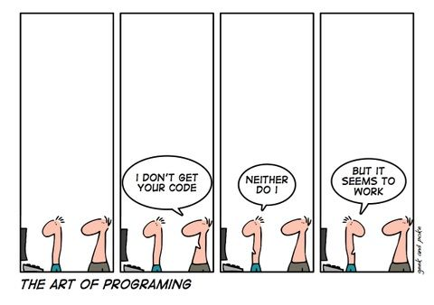

Hi, I'm Kamil Kuzara
$>|
Here's a funny picture I found on the Internet
Find me on
Who I am
aspiring software engineer, Formula 1 enthusiast, physics geek
$>|
aspiring software engineer, Formula 1 enthusiast, physics geek
I'm a Computer Science graduate from King's College London with a Master's degree. With three years of hands-on experience in Java and two years in Python,
I've developed a strong foundation in software development.
My passion lies in tackling optimisation problems and delving into their applications and solution algorithms. Over the recent years,
I've dedicated significant time to studying various optimisation techniques and their real-world implementations. My expertise extends to
parallel algorithm design and multi-threaded programming, where I've successfully applied these skills to enhance computational efficiency in previous projects.
Combining my academic background with practical experience, I bring a comprehensive understanding of both theoretical concepts and their practical applications
in software development. I'm eager to contribute my skills and knowledge to innovative projects that push the boundaries of technology.
Outside of the tech world, I'm an avid Formula 1 enthusiast, drawn to the rivalry and the intricacies of engineering and strategy that drive the sport.
In my leisure time, you'll often find me on the basketball court or with a good physics book learning about the mysteries of the Universe.
1
2
3
4
5
6
7
8
9
10
11
12
13
14
15
16
17
18
19
{
name: "Kamil Kuzara",
skills: [
"Java",
"Python",
"Multi-threaded programming",
"NodeJS",
"Neo4j",
"HTML & CSS"
],
interests: [
"Optimisation algorithms",
"Complexity theory",
"Data Mining",
"Physics",
"Formula 1",
"Raspberry Pi"
]
}
3rd year individual project. The equivalent of a Bachelor's Thesis.
A mobile networking app developed for an external client.
A Java-based desktop application for managing Kanban boards.